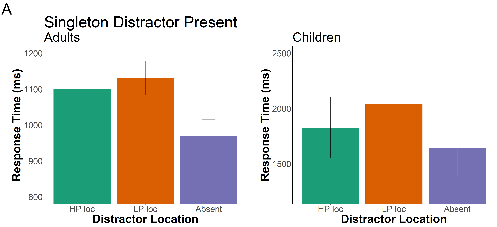

Portfolio 8
3.21.2023
The goal of this portfolio is to examine part of my thesis data. To recap, my thesis is examining distractor suppression in children and adults. Participants are shown a distractor in a location more frequently than other locations in a visual search array. Based on previous studies, we would expect adults to suppress their attention to the high-probability location, but we were unsure when in development children develop this ability.
library(tidyverse)
library(tidyr)
library(rstatix)
library(data.table)
library(afex)
library(emmeans)
library(psych)
library(ggprism)
library(patchwork)
library(magrittr)
library(cowplot)I put all the messy loading in of different data sets and adding in important columns to an R script instead of having it here.
Trim the Data
Define trimming criteria according to Van Selst and Jolicoeur 1994.
xsize <- c(4, 5, 6, 7, 8, 9, 10, 11, 12, 13, 14, 15, 20,
25, 30, 35, 50, 100)
stds <- c(1.458, 1.68, 1.841, 1.961, 2.05, 2.12, 2.173,
2.22, 2.246, 2.274, 2.31, 2.326, 2.391, 2.41, 2.4305,
2.45, 2.48, 2.5)Trim the data and compute the percent trimmed
trimmedA <- adults[adults$acc==1, ] %>% group_by(id, relative_hp_dist) %>%
mutate(sdc = ifelse(length(rt)>=100,2.5,approx(xsize,stds,xout=length(rt))$y), avg = mean(rt), stdev = sd(rt)) %>%
filter(rt <= sdc*stdev+avg & rt >=avg-(sdc*stdev) & rt >=.200) %>%
select(id, relative_hp_dist, rt, block_num) %>% #keep these columns in the new data frame
as.data.frame()
statPrep <- trimmedA %>% group_by(id, relative_hp_dist) %>% summarise(measurement=mean(rt)) %>% as.data.frame()## `summarise()` has grouped output by 'id'. You can override using the `.groups`
## argument.100-(nrow(trimmedA)/nrow(adults[adults$acc==1, ]))*100## [1] 2.8757352.88% of trials were trimmed from the adult data set.
trimmedC12 <- kids12[kids12$acc==1, ] %>% group_by(id, relative_hp_dist) %>%
mutate(sdc = ifelse(length(rt)>=100,2.5,approx(xsize,stds,xout=length(rt))$y), avg = mean(rt), stdev = sd(rt)) %>%
filter(rt <= sdc*stdev+avg & rt >=avg-(sdc*stdev) & rt >=.200) %>%
select(id, relative_hp_dist, rt, block_num1) %>% #keep these columns in the new data frame
as.data.frame()
statPrep <- trimmedC12 %>% group_by(id, relative_hp_dist) %>% summarise(measurement=mean(rt)) %>% as.data.frame()## `summarise()` has grouped output by 'id'. You can override using the `.groups`
## argument.100-(nrow(trimmedC12)/nrow(kids12[kids12$acc==1, ]))*100## [1] 2.7838432.78% of trials were trimmed from the older child data set.
trimmedC6 <- kids6[kids6$acc==1, ] %>% group_by(id, relative_hp_dist) %>%
mutate(sdc = ifelse(length(rt)>=100,2.5,approx(xsize,stds,xout=length(rt))$y), avg = mean(rt), stdev = sd(rt)) %>%
filter(rt <= sdc*stdev+avg & rt >=avg-(sdc*stdev) & rt >=.200) %>%
select(id, relative_hp_dist, rt, block_num2) %>% #keep these columns in the new data frame
as.data.frame()
statPrep <- trimmedC6 %>% group_by(id, relative_hp_dist) %>% summarise(measurement=mean(rt)) %>% as.data.frame()## `summarise()` has grouped output by 'id'. You can override using the `.groups`
## argument.100-(nrow(trimmedC6)/nrow(kids6[kids6$acc==1, ]))*100## [1] 6.0747666.07% of trials were trimmed from the younger child data set.
Response Time ANOVA for 3 conditions and 2 ages
kids12<- kids12 %>%
rename(
block_num=block_num1,
age=age1
)
kids6<- kids6 %>%
rename(
block_num=block_num2,
age=age2
)all_data <- rbind(adults, kids12)Create a new data frame with the average RT for each relative distractor location per participant, so we can do a repeated measures ANOVA – eventually – maybe.
space <- all_data %>%
group_by(age, id, relative_hp_dist) %>%
summarize(rts = mean(rt)
)## `summarise()` has grouped output by 'age', 'id'. You can override using the
## `.groups` argument.space## # A tibble: 165 × 4
## # Groups: age, id [33]
## age id relative_hp_dist rts
## <chr> <dbl> <chr> <dbl>
## 1 adult 14 absent 775.
## 2 adult 14 high_prob 858.
## 3 adult 14 lp_1 1089.
## 4 adult 14 lp_2 886.
## 5 adult 14 lp_3 897.
## 6 adult 15 absent 807.
## 7 adult 15 high_prob 982.
## 8 adult 15 lp_1 1082.
## 9 adult 15 lp_2 942.
## 10 adult 15 lp_3 1112.
## # … with 155 more rowsRun ANOVA on 3 conditions first, and if significant, then run in on 5 conditions?
Need to reformat the above df to have a column for each relative_hp_dist/ID so we can average across low-probability locations.
space_anova <- setDT(space)
space_anova <- dcast(space_anova,id+age~relative_hp_dist,value.var='rts')space_anova <- space_anova %>%
mutate(low_prob = (lp_1+lp_2+lp_3)/3)Now, I want to create a smaller graph with just 3 bars: one for the high-probability rts, average of low-probability rts, and no distractor.
df_mod <- subset(space_anova, select=c(id, age, high_prob, absent, low_prob))
df_mod <- reshape2::melt(df_mod, id.var=c('id', 'age'), variable.name= "relative_hp_dist")Plot data.
ggplot(df_mod, aes(relative_hp_dist, value, fill=relative_hp_dist)) +
geom_bar(stat="summary", fun.y="mean", position="dodge") +
facet_grid(.~age) +
xlab("Distractor Location") + ylab("Response Times (ms)") +
scale_fill_brewer(palette="Dark2") +
theme(legend.position="none")## Warning in geom_bar(stat = "summary", fun.y = "mean", position = "dodge"):
## Ignoring unknown parameters: `fun.y`## No summary function supplied, defaulting to `mean_se()`
## No summary function supplied, defaulting to `mean_se()`
Run a 3x2 mixed design ANOVA with distractor location and age as independent variables and rt as the dependent variable.
model3 <- aov_car(value ~ age*relative_hp_dist + Error(id/relative_hp_dist), data=df_mod)## Converting to factor: age## Contrasts set to contr.sum for the following variables: agemodel3## Anova Table (Type 3 tests)
##
## Response: value
## Effect df MSE F ges p.value
## 1 age 1, 31 1205579.81 8.00 ** .201 .008
## 2 relative_hp_dist 1.65, 51.18 21074.40 25.20 *** .022 <.001
## 3 age:relative_hp_dist 1.65, 51.18 21074.40 4.28 * .004 .025
## ---
## Signif. codes: 0 '***' 0.001 '**' 0.01 '*' 0.05 '+' 0.1 ' ' 1
##
## Sphericity correction method: GGThe effect of age was significant F(1,31)=8, p=.008.The effect of distractor location was significant, F(2, ??)= 25.2, p<.001. The interaction was significant, F=4.28, p=.025.
Separate ANOVA for just adults
spaceA <- adults %>%
group_by(id, relative_hp_dist) %>%
summarize(rts = mean(rt)
)## `summarise()` has grouped output by 'id'. You can override using the `.groups`
## argument.Run ANOVA on 3 conditions first, and if significant, then run in on 5 conditions?
Need to reformat the above df to have a column for each relative_hp_dist/ID so we can average across low-probability locations.
space_anovaA <- setDT(spaceA)
space_anovaA <- dcast(space_anovaA,id~relative_hp_dist,value.var='rts')space_anovaA <- space_anovaA %>%
mutate(low_prob = (lp_1+lp_2+lp_3)/3)Now, I want to create a smaller graph with just 3 bars: one for the high-probability rts, average of low-probability rts, and no distractor.
df_modA <- subset(space_anovaA, select=c(id, high_prob, absent, low_prob))
df_modA <- reshape2::melt(df_modA, id.var=c('id'), variable.name= "relative_hp_dist")modelA <- aov_car(value ~ relative_hp_dist + Error(id/relative_hp_dist), data=df_modA)
modelA## Anova Table (Type 3 tests)
##
## Response: value
## Effect df MSE F ges p.value
## 1 relative_hp_dist 1.38, 35.96 20428.77 27.81 *** .066 <.001
## ---
## Signif. codes: 0 '***' 0.001 '**' 0.01 '*' 0.05 '+' 0.1 ' ' 1
##
## Sphericity correction method: GGThe repeated measures ANOVA on just the adults was significant.
model_dist_rtsA <- aov_car(rts ~ relative_hp_dist + Error(id/relative_hp_dist), data=spaceA)
model_dist_rtsA## Anova Table (Type 3 tests)
##
## Response: rts
## Effect df MSE F ges p.value
## 1 relative_hp_dist 2.22, 57.78 54709.91 9.36 *** .048 <.001
## ---
## Signif. codes: 0 '***' 0.001 '**' 0.01 '*' 0.05 '+' 0.1 ' ' 1
##
## Sphericity correction method: GGRun t-test to determine significant differences between conditions.
space_anovaA %>%
t.test(x=space_anovaA$low_prob, y=space_anovaA$high_prob, alternative="greater", mu=0,paired = TRUE, conf.level = .95) ##
## Paired t-test
##
## data: space_anovaA$low_prob and space_anovaA$high_prob
## t = 2.1911, df = 26, p-value = 0.0188
## alternative hypothesis: true mean difference is greater than 0
## 95 percent confidence interval:
## 11.31615 Inf
## sample estimates:
## mean difference
## 51.0714space_anovaA%>%
t.test(x=space_anovaA$high_prob, y=space_anovaA$absent, alternative="greater", mu=0, paired =TRUE, conf.level = .95) ##
## Paired t-test
##
## data: space_anovaA$high_prob and space_anovaA$absent
## t = 6.0301, df = 26, p-value = 1.139e-06
## alternative hypothesis: true mean difference is greater than 0
## 95 percent confidence interval:
## 128.1138 Inf
## sample estimates:
## mean difference
## 178.6435space_anovaA%>%
t.test(x=space_anovaA$low_prob, y=space_anovaA$absent, alternative="greater", mu=0, paired =TRUE, conf.level = .95)##
## Paired t-test
##
## data: space_anovaA$low_prob and space_anovaA$absent
## t = 5.542, df = 26, p-value = 4.044e-06
## alternative hypothesis: true mean difference is greater than 0
## 95 percent confidence interval:
## 159.0168 Inf
## sample estimates:
## mean difference
## 229.7149Separate ANOVA for just kids
spaceK <- kids12 %>%
group_by(id,relative_hp_dist) %>%
summarize(rts = mean(rt)
)## `summarise()` has grouped output by 'id'. You can override using the `.groups`
## argument.Run ANOVA on 3 conditions first, and if significant, then run in on 5 conditions?
Need to reformat the above df to have a column for each relative_hp_dist/ID so we can average across low-probability locations.
space_anovaK <- setDT(spaceK)
space_anovaK <- dcast(space_anovaK,id~relative_hp_dist,value.var='rts')space_anovaK <- space_anovaK %>%
mutate(low_prob = (lp_1+lp_2+lp_3)/3)Now, I want to create a smaller graph with just 3 bars: one for the high-probability rts, average of low-probability rts, and no distractor.
df_modK <- subset(space_anovaK, select=c(id,high_prob, absent, low_prob))
df_modK <- reshape2::melt(df_modK, id.var=c('id'), variable.name= "relative_hp_dist")modelK <- aov_car(value ~ relative_hp_dist + Error(id/relative_hp_dist), data=df_modK)
modelK## Anova Table (Type 3 tests)
##
## Response: value
## Effect df MSE F ges p.value
## 1 relative_hp_dist 1.34, 6.71 51262.59 6.57 * .016 .033
## ---
## Signif. codes: 0 '***' 0.001 '**' 0.01 '*' 0.05 '+' 0.1 ' ' 1
##
## Sphericity correction method: GGThe repeated measures ANOVA on just the kids was also significant.
model_dist_rtsK <- aov_car(rts ~ relative_hp_dist + Error(id/relative_hp_dist), data=spaceK)
model_dist_rtsK## Anova Table (Type 3 tests)
##
## Response: rts
## Effect df MSE F ges p.value
## 1 relative_hp_dist 1.71, 8.56 118692.62 4.60 * .018 .048
## ---
## Signif. codes: 0 '***' 0.001 '**' 0.01 '*' 0.05 '+' 0.1 ' ' 1
##
## Sphericity correction method: GGRun t-test to determine significant differences between conditions.
space_anovaK %>%
t.test(x=space_anovaK$low_prob, y=space_anovaK$high_prob, alternative="greater", mu=0,paired = TRUE, conf.level = .95) ##
## Paired t-test
##
## data: space_anovaK$low_prob and space_anovaK$high_prob
## t = 2.2016, df = 5, p-value = 0.03947
## alternative hypothesis: true mean difference is greater than 0
## 95 percent confidence interval:
## 25.16014 Inf
## sample estimates:
## mean difference
## 296.9573space_anovaK%>%
t.test(x=space_anovaK$high_prob, y=space_anovaK$absent, alternative="greater", mu=0, paired =TRUE, conf.level = .95) ##
## Paired t-test
##
## data: space_anovaK$high_prob and space_anovaK$absent
## t = 1.0373, df = 5, p-value = 0.1736
## alternative hypothesis: true mean difference is greater than 0
## 95 percent confidence interval:
## -64.19536 Inf
## sample estimates:
## mean difference
## 68.1101space_anovaK%>%
t.test(x=space_anovaK$low_prob, y=space_anovaK$absent, alternative="greater", mu=0, paired =TRUE, conf.level = .95)##
## Paired t-test
##
## data: space_anovaK$low_prob and space_anovaK$absent
## t = 3.3457, df = 5, p-value = 0.01021
## alternative hypothesis: true mean difference is greater than 0
## 95 percent confidence interval:
## 145.1958 Inf
## sample estimates:
## mean difference
## 365.0675ggplot(all_data, aes(relative_hp_dist, rt, fill=relative_hp_dist)) +
geom_bar(stat="summary", fun.y="mean", position="dodge") +
facet_grid(.~age) +
xlab("Distractor Location") + ylab("Response Times (ms)") +
scale_fill_brewer(palette="Dark2") +
theme(legend.position="none")## Warning in geom_bar(stat = "summary", fun.y = "mean", position = "dodge"):
## Ignoring unknown parameters: `fun.y`## No summary function supplied, defaulting to `mean_se()`
## No summary function supplied, defaulting to `mean_se()`
Examine normalized rts
write.csv(df_mod, "norm_data.csv", row.names=FALSE)normrt <- read_csv("norm_data_new.csv", show_col_types = FALSE)## New names:
## • `id` -> `id...1`
## • `` -> `...6`
## • `` -> `...7`
## • `id` -> `id...8`normrt<- subset(normrt, select=c(id...1, age, relative_hp_dist, norm))model_norm <- aov_car(norm ~ age*relative_hp_dist + Error(id...1/relative_hp_dist), data=normrt)## Converting to factor: age## Contrasts set to contr.sum for the following variables: agemodel_norm## Anova Table (Type 3 tests)
##
## Response: norm
## Effect df MSE F ges p.value
## 1 age 1, 31 -0.00 -0.00 <.001 >.999
## 2 relative_hp_dist 1.88, 58.30 0.01 32.37 *** .511 <.001
## 3 age:relative_hp_dist 1.88, 58.30 0.01 1.80 .055 .176
## ---
## Signif. codes: 0 '***' 0.001 '**' 0.01 '*' 0.05 '+' 0.1 ' ' 1
##
## Sphericity correction method: GG